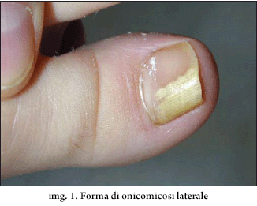
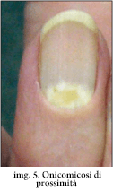
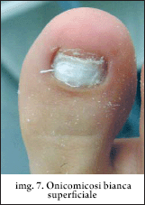
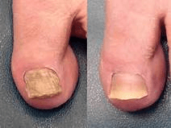
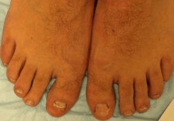

Pratiche tibetane per la cura del fungo dei piedi
Dell’ efficacia della medicina tibetana se parla da sempre, è legendaria.Le sue scoperte mediche sono uniche e si differenziano dalle pratiche mediche di qualsiasi altra parte del mondo.Gli ingredienti delle medicine sono sempre del tutto naturali.Questo discorso vale anche nella cura dei funghi.In base ai diversi tipi di malattia, le pratiche tibetane sono in grado di curare qualsiasi tipo di cura.
Tipo di fungo delle unghie
Esistono 4 tipi di fungo base:
A seconda della tipologia di fungo l’ infezione si può dividere in 4 gruppi:
Onicomicosi laterale o distale il tipo di fungo più diffuso attualmente. Penetra dai bordi Dell’unghia fino in profondità, per questo l’unghia cambia colore, inizia a rompersi.

Onicomicosi sublinguale di prossimità - tipologia di fungo delle unghie molto raro. L’infezione avviene In questo caso l’infezione avviene alla base e si diffonde poi sul resto dell’unghia. In questo caso la macchia bianca si diffonde poi su tutta l’unghia.

Onicomicosi bianca da superficie - si palesa sotto forma di macchie bianche sulla base dell’unghia, si muovono espande lentamente verso l’esterno. Con il tempo diventa più grande e di colorazione tendente al giallo.

Onicomicosi totale distrofica distrugge l’unghia, durante il processo l’unghia si rovina e cambia forma e colore.

Cura del fungo con il metodo tibetano
L’ infezione da funghi è una malattia che richiede una cura intensiva e particolare.Le creme tradizionali, hanno un effetto che dura non più di 15 minuti dopo l’ applicazione, il processo di cura può durare mesi, senza neanche eliminare il virus. In Tibet la lotta con il fungo delle unghie da anni viene curato in maniera complessiva. Gli impacchi immersi in infusi di erbe vengono applicati sui punti malati per un mese, in seguito il fungo scompare.
Oggi alcuni preparati tibetani vengono esportati in tutti il mondo.Tra di loro troviamo preparati anti fungo. - è un preparato naturale creato sulla base delle pratiche tibetane per la cura delle unghie. La crema segue i principi delle antiche tecniche per curare il fungo, ma si avvale del processo medico contemporaneo. La formula che è stata usata per secoli dai monaci tibetani è contenuta in forma originale in .
È clinicamente dimostrato che i preparati tibetani nella cura del fungo sono fino a 5 volte più efficaci dei preparati tradizionali.
Il crema ha ingredienti naturali
al 100% che comprendono:
1) CHAMOMILA RECUTITA FLOWER EXTRACT - antibiotico naturale che ha
una potente azione anti fungo e cicatrizzante.
2) BUTYROSPERMUM PARKII BUTTER, rinforza le difese
immunitarie, migliora la circolazione sanguigna, elimina le
infiammazioni.
3) PINUS SYLVESTRIS LEAF OIL velocizza il processo
cicatrizzante, migliora il processo rigenerativo delle cellule.
4) MELALEUCA ALTERNIFOLIA LEAF OI ha un effetto ammorbidente, rilassa la
pelle, ripara le spaccature della pelle.
5) PROPOLIS EXTRACT elimina rapidamente prurito e
dolore.
Il fungo delle unghie è uno dei problemi più spinosi che possano capitare, si sviluppa inizialmente senza sintomi.Tuttavia il suo sviluppo ha conseguenze molto scomode e sgradevoli. In più del 70 % dei casi i malati perdono completamente le unghie infette. Prendetevi cura di voi e siate in salute!
Al giorno d’ oggi, nella lotta contro il fungo dei piedi, la crema è uno dei preparati più efficaci. La differenza principale rispetto agli altri preparati simili è che ha un effetto curativo complessivo su tutta la zona malata.(piedi e unghie). Il crema ha potenti effetti antinfiammatori, anti microbi, e cicatrizzanti, rinforza le difese immunitarie. Poco tempo fa ho iniziato a raccomandarlo ai pazienti per la cura e per la prevenzione del fungo dei piedi, e sto già ricevendo molte recensioni positive sul complesso.





